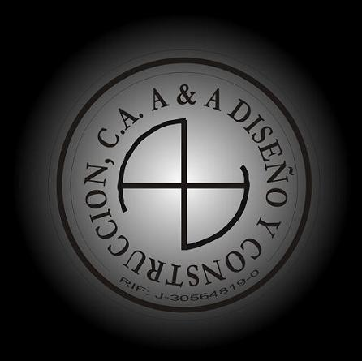

Servicios
Gestión de obras y proyectos
Conforma un sistema o manejo integral mediante prácticas gerenciales de coordinación,
control, evaluación y retroalimentación de todo el proceso de una obra, desde la concepción
del proyecto, hasta la producción de una obra o edificación adecuadamente construida,
que cumpla con las expectativas del cliente en cuanto a tiempo y presupuesto.
- Establecer conjuntamente con el cliente
los objetivos y estrategias.
- Planificación y creación del programa
de ejecución y del flujo financiero
- Dirección y gestión de las actividades
- Selección y control de personal y de
subcontratistas.
- Control de costos y de calidad, según las
especificaciones técnicas del proyecto
- Documentación permanente, cierre y
finiquitos del contrato.
Administración de contratos
Metodología de control y seguimiento que aplicamos para ofrecer una visión clara y precisa
del avance físico financiero, fundamentales para el buen desarrollo y el éxito de una obra.
Involucra:
- Preparación de ofertas, presupuestos
y A.P.U.
- Valuaciones y cuadros de avance.
- Cronogramas de ejecución e inversión.
- Aumentos y disminuciones
- Ajuste de precios.
- Cuadro de cierre.
- Actas y trámites.
- Cómputos métricos y mediciones de obra
- Control de avance de subcontratistas.
- Gestión para financiamiento bancario y
créditos de construcción y/o de turismo.
Servicios
Construcción
Construimos estructuras y obras civiles para
edificaciones, con los controles de calidad y
seguridad, acompañando a nuestros clientes
públicos y privados, cumpliendo con el
presupuesto y el tiempo establecidos.
- Industrias
- Hoteles
- Viviendas
- Comrecios y oficinas

Creando y Construyendo nuevas realidades...